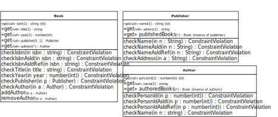

Table of Contents
In this chapter, we show
how to derive a JS class model from an OO class model with derived inverse reference properties,
how to code the JS class model in the form of JS model classes,
how to write the view and controller code based on the model code.
The starting point for making our JS class model is an OO class model with derived inverse reference properties like the one discussed above, which we present here again, for convenience:
 |
Notice that the model contains two derived inverse reference
properties: Publisher::/publishedBooks and
Author::/authoredBooks. Each of them is linked
to a master property, from which it is derived. Consequently, each of them
represents a pair of mutually inverse reference properties corresponding
to a bidirectional association.
Compared to making JS class models with unidirectional associations, the only new issue is:
Add a «get» stereotype to all derived inverse reference properties, implying that they have an implicit getter, but no setter. They are programatically set whenever their inverse master reference property is updated.
This concerns the two derived inverse reference properties
Publisher::/publishedBooks and
Author::/authoredBooks. Thus, we get the
following JavaScript class model:
|  |